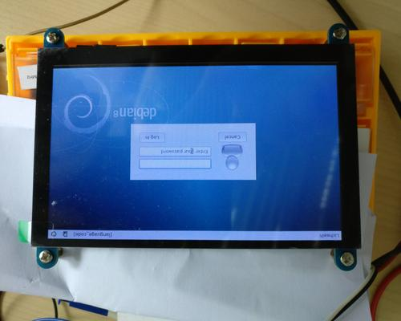

<div class="post-container flexflow-top-down"><div class="post-content"><div class="header flexflow-left-right" id="#Slic3r-batch-export"><div class="back_button"><a href="#proj_home"><i class="fas fa-backward"></i></a></div><div class="title"><div>Allwinner v3s tryout</div></div></div><div class="meta"><div class="meta-content"><span><i class="fas fa-calendar-alt"></i> Mar 9, 2019</span></div><div class="meta-tags"><span><i class="fas fa-tags"></i> tag1 tag2 tag3</span></div><div class="meta-content"><span><i class="fas fa-clock"></i> 2 min</span></div></div><div class="caption_img"><p>Allwinner v3s tryout</p></div><h3>What is it ?</h3><p>this is a tryout of homemake embedded linux project using allwinner v3s chips inspired by<a href="https://www.reddit.com/r/electronics/comments/83141t/i_made_an_allwinner_v3s_evaluation_board_based/" target="_blank">https://www.reddit.com/r/electronics/comments/83141t/i_made_an_allwinner_v3s_evaluation_board_based/<i class="fas fa-external-link-alt"></i></a></p><h3>progress</h3><p>currently in progress, with the 2nd try the first try<a href="https://github.com/louiscklaw/allwinner-v3s-tryout/tree/20181118-print-1" target="_blank">https://github.com/louiscklaw/allwinner-v3s-tryout/tree/20181118-print-1<i class="fas fa-external-link-alt"></i></a></p><ul><li>the first try {% img [1st try hardware] /images/IMG_20181219_003601.800.jpg [800] %}</li><li>the second try CHANGE LOG:</li><ul><li>fix SVREF wire</li><li>4k7 on SDIO CLK wire</li><li>fix power facilities</li><li>add GL827L sdcard reading facilities</li><li>add ATMega328p for power and reset control</li><li>add USB to serial {% img [1st try hardware] /images/IMG_20181219_003601.800.jpg [800] %}</li></ul></ul><h3>buildroot:</h3><ul><li>to setup ubuntu/docker for buildroot(tested under 18.04)</li><li>sudo apt-get install iputils-ping vim git wget xz-utils bzip2 gcc device-tree-compiler python python-dev time make pkg-config</li></ul><h3>references:</h3><ul><li><a href="https://github.com/louiscklaw/allwinner-v3s-tryout" onclick="hide_menu();">allwinner-v3s-tryout</a></li><li><a href="https://www.reddit.com/r/electronics/comments/83141t/i_made_an_allwinner_v3s_evaluation_board_based/" onclick="hide_menu();">I made an Allwinner V3s evaluation board (based loosely on LicheePi)</a></li><li><a href="https://simonrichards.com/v3s/" onclick="hide_menu();">test</a></li></ul><h3>BOM/Part list:</h3><p>to be updated</p><a class="back_to_proj_home" href="#proj_home" style="width: 100%;"><i class="fa fa-arrow-left"></i> back to project home</a></div></div>